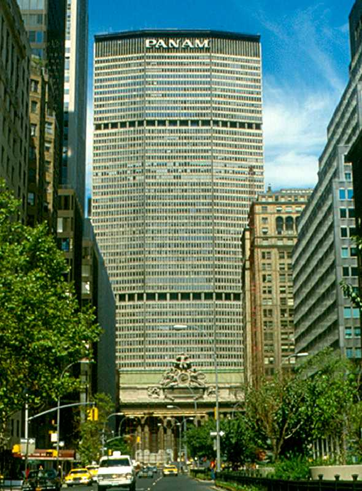
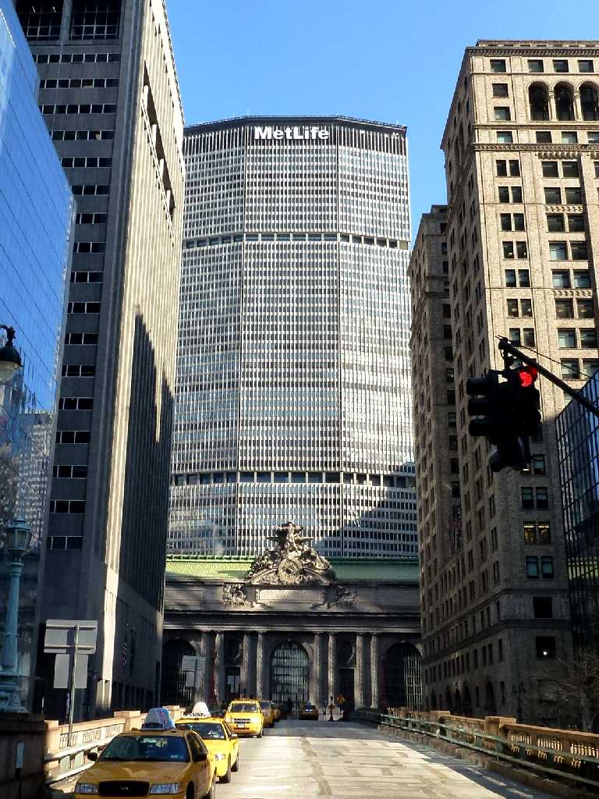

August 1970 PanAm Building New York
学生時代は世界の航空業界をリードしたパンアメリカン航空の本社ビルで世界一高い商業オフィスビル(２４６m５９階)であったパンナムビル パンアメリカン航空は国際線でユナイテッド航空は国内線でしたが運賃が高額なのでグレイハウンド高速バスの外国人観光客向け９９日間９９ドルフリーパスチケットを使い２ヶ月間の旅を楽しみました

February 25 2013 MetLife Building
パンナムの業績悪化によりメットライフ生命保険会社に１９８１年売却され１９９１年にパンナムが事業を停止したのでロゴとビル名をメットライフビルに変更した